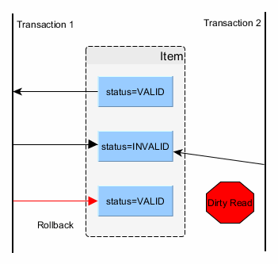
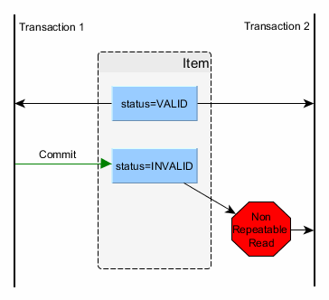
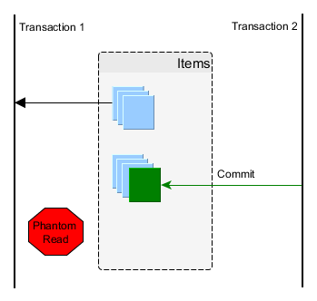

Data-modeling in depth
Scalability/High Availability
Pretty much everything, just scratching a very wide surface
Organized collection of data to be accessed electronically
[Used to...] Store, manage and retrieve information
A certain degree of structure is sane
Data survival of process termination
Processing records inside a file is not something our customers should pay for
Excel can only take you so far 😉
Literally dozens of ways to categorize databases
Precisely: dozens + n
A distributed computer system cannot guarantee all of:
Eric Brewer ~2000
Choose between CA, AP or CP
Ol-skool acronym for
DB operations satisfying ACID are considered a logical single operation and called a transaction
Dirty Read
Non-repeteable Read
Phantom Read
Take ground over sound relational algebra
Data modeled as (optionally related) collection of typed (schema) rows inside tables and accessed using relational operators
Classic modelling (data normalization) takes nature of data into account to optimize integrity and minimize repetition
Good for well-defined problems with known data structure that have "modest" scalability needs
Object-Relational impedance mismatch
Cons: work against mode common scenarios
Very simple ⇒ Very fast
Unstructured data records identified by primary key
"Easy" to wide-scale
Good for lumps of relatively non-crucial information to be accessed quickly
Add a new paradigm: a document ⇒ a new way of modelling data
Document is semi-structured data identoified by a key
The database understands the document
Fast and scalable
Great for complex data structures that require medium-complex querying
Embrace application-specific schema
Tolerate eventual consistency